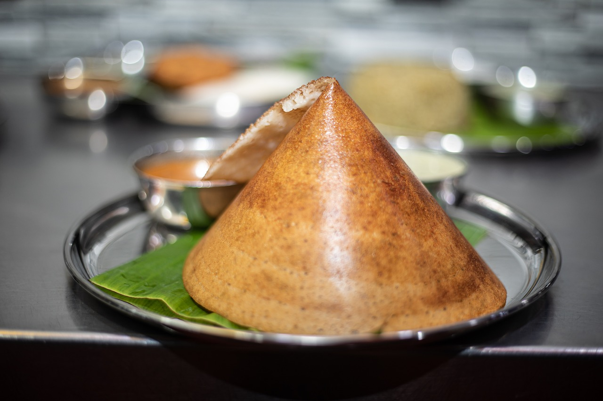

Masala Dosa Recipe

Description
The famous Dosa needs no introduction. It is popular all over South India, and North as well. This is a variation that will have some masala paste in the middle of the dosa.
- Idli Rice
- Urad Dal, Methi seeds
- Oil
- Water, Salt
- Potato
- Channa Dal
- Green chillies, Ginger, Coriander leaves
- Mustard seeds, Curry leaves
- Hing, Turmeric powder
Steps
- Blend the rice and dal, methi mixture in a mixi.
- Ensure that the batter is smooth and consistent.
- Leave the batter overnight in a closed vessel for fermenting.
- Boil the potatoes till they are soft.
- Soak the channa dal in hot water for half an hour.
- Peel and chop the potatoes.
- Chop the green chillies, ginger and coriander leaves.
- Heat the oil in a pan.
- Add mustard seeds and let them crackle.
- Add the channa dal and saute for a few minutes until they are golden brown.
- Add the chopped green chillies, curry leaves and ginger.
- Add turmeric powder and hing to the pan.
- Add water and stir till the mixture gains a little thickness.
- Add the sliced potatoes. Mix very well.
- Add salt for taste.
- Cook for 4-5 minutes, then turn off the heat and add the coriander leaves.
- Heat a dosa pan and make the dosas. Make sure that they are large and thin.
- When both sides are cooked, turn over and spread the potato filling, and fold the dosa.